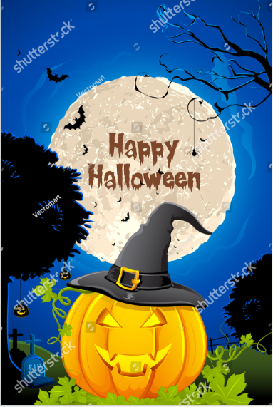

Pumpkin Carving List
- Pumpkins: Choose pumpkins with a well-contoured and firm surface, ideally free of damages and deformities.
- Pumpkin carving tools: Look for a pumpkin carving kit that includes serrated saws, scoop tools, and fine carving tools. These specialized tools make carving easier and safer.
- Stencils or templates: Find printable pumpkin carving patterns or purchase pre-made stencils. These will help you achieve precise and intricate designs.
- Marker or pen: Use a washable marker to sketch your design onto the pumpkin before carving. Alternatively, a permanent marker can sometimes work better depending on the surface.
- Pumpkin scoop or spoon: A sturdy spoon or pumpkin scoop is essential for removing the pumpkin seeds and pulp from the inside. Try to get a metal one as plastic ones can break easily.
- Tea lights or battery-operated candles: Opt for safer alternatives to traditional candles, such as LED tea lights or battery-operated candles.
- Newspaper or plastic sheet: Spread newspaper or a plastic sheet to protect your work surface from pumpkin guts and make cleanup easier.
- Optional extras: Get creative with additional supplies like glow-in-the-dark paint, glitter, or other embellishments to add a unique touch to your carved pumpkins.